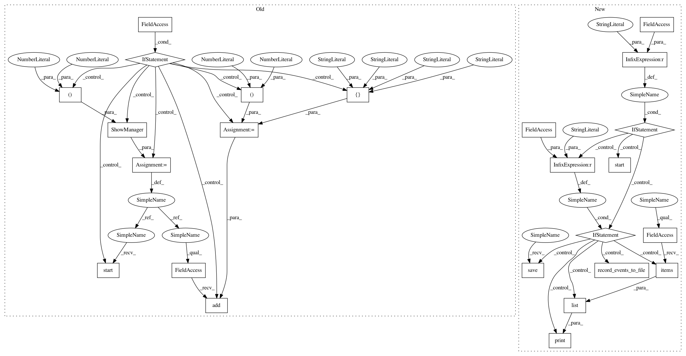

01c53508f7b9e8d274378074383854ca8eaf259f,dipy/viz/tests/test_ui.py,,test_ui_radio_button,#,629
Before Change
assert_arrays_equal(selected_option, expected)
del show_manager
if interactive:
radio_button_test = ui.RadioButton(
labels=["option 1", "option 2\nOption 2", "option 3", "option 4"],
position=(100, 100))
showm = window.ShowManager(size=(600, 600))
showm.ren.add(radio_button_test)
showm.start()
@npt.dec.skipif(not have_vtk or skip_it)
@xvfb_it
def test_ui_listbox_2d(recording=False):
filename = "test_ui_listbox_2d"
After Change
title="DIPY Checkbox")
show_manager.ren.add(radio_button_test)
if mode == "interactive":
show_manager.start()
elif mode == "record":
// Recorded events:
// 1. Click on button of option 1.
// 2. Click on button of option 2.
// 3. Click on button of option 2.
// 4. Click on text of option 2.
// 5. Click on button of option 1.
// 6. Click on text of option 3.
// 7. Click on button of option 4.
// 8. Click on text of option 4.
show_manager.record_events_to_file(recording_filename)
print(list(event_counter.events_counts.items()))
event_counter.save(expected_events_counts_filename)
else:
show_manager.play_events_from_file(recording_filename)
expected = EventCounter.load(expected_events_counts_filename)
event_counter.check_counts(expected)
// Check if the right options were selected.
expected = [["option 1"], ["option 2\nOption 2"], ["option 2\nOption 2"],
["option 2\nOption 2"], ["option 1"], ["option 3"],
["option 4"], ["option 4"]]
assert len(selected_option) == len(expected)
assert_arrays_equal(selected_option, expected)
@npt.dec.skipif(not have_vtk or skip_it)
@xvfb_it
def test_ui_listbox_2d(recording=False):
filename = "test_ui_listbox_2d"
In pattern: SUPERPATTERN
Frequency: 3
Non-data size: 24
Instances
Project Name: nipy/dipy
Commit Name: 01c53508f7b9e8d274378074383854ca8eaf259f
Time: 2018-08-13
Author: marc.cote.19@gmail.com
File Name: dipy/viz/tests/test_ui.py
Class Name:
Method Name: test_ui_radio_button
Project Name: nipy/dipy
Commit Name: 01c53508f7b9e8d274378074383854ca8eaf259f
Time: 2018-08-13
Author: marc.cote.19@gmail.com
File Name: dipy/viz/tests/test_ui.py
Class Name:
Method Name: test_ui_radio_button
Project Name: nipy/dipy
Commit Name: 14d296009281bee1b55ed42adffd6e8fe7975d6a
Time: 2018-08-13
Author: marc.cote.19@gmail.com
File Name: dipy/viz/tests/test_ui.py
Class Name:
Method Name: test_ui_checkbox
Project Name: nipy/dipy
Commit Name: 14d296009281bee1b55ed42adffd6e8fe7975d6a
Time: 2018-08-13
Author: marc.cote.19@gmail.com
File Name: dipy/viz/tests/test_ui.py
Class Name:
Method Name: test_ui_radio_button